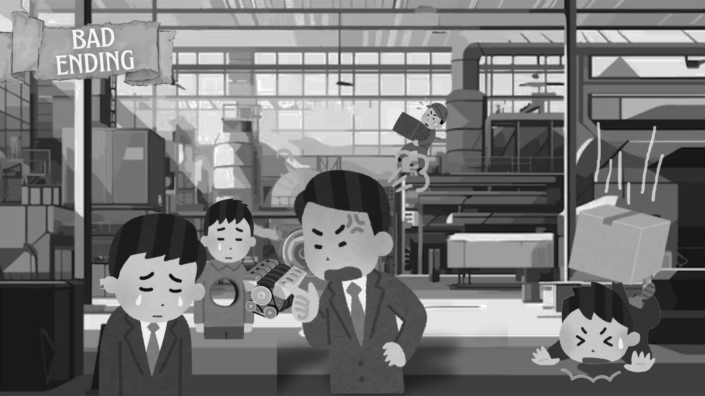

OBRIGADO POR JOGAR!

Você, como grande pensador, deu o seu máximo para piorar a situação dos trabalhadores. Tudo aquilo que poderia ser prevenido, foi ampliado e ocasionou maiores riscos. Tudo que poderia ser feito, foi feito incorretamente, realmente impressionante...
O trabalhador exausto, após a sua intervenção, foi demitido do trabalho, perdeu sua casa e não conseguiu sustentar sua família. Hoje em dia ele está desaparecido por 6 anos.
Os prazos ficaram cada vez menores e mais rígidos.
Os superiores continuam fazendo decisões sem nem pensar em consultar os trabalhadores.
A remuneração não foi alterada.
Para a humanidade, teria sido melhor se você não tivesse existido.
ㅤㅤㅤㅤ